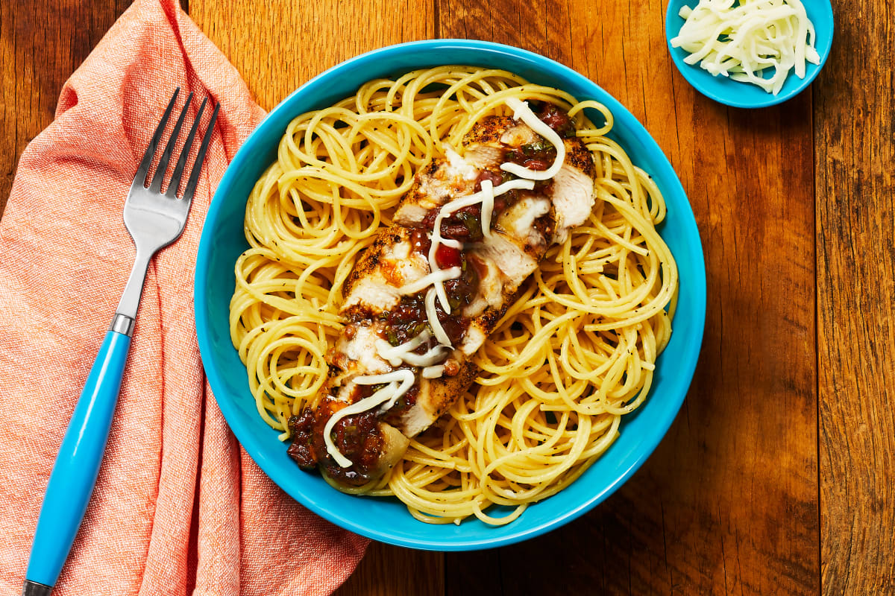

HelloFresh Italian Chicken

This is my favorite recipe that I have made with HelloFresh. The sweet tomato sauce pairs perfectly with the savory checken and filling garlic spaghetti. I order it every time it become available.
Ingredients
- 2 Roma Tomatos
- 20 oz Chick Chutlets
- Mozzarella Cheese
- Balsamic Vinegar
- Parsley
- Chives
- Italian Seasoning
- Spaghetti
- Garlic
- Oil
- Butter
- Pepper
- Sugar
Steps:
- Heat Oven to 425 degrees
- Boil water and add spaghetti. Cook for 9-11 minutes
- Dice tomato, slice chives, chop parsley, mince garlic
- Season chicken with Italian seasoning
- Cook chicken in pan for 2-3 for each side
- Transfer chicken to baking sheet and top with half of the Mozzarella cheese
- Roast until cooked (9-11 minutes)
- In pan, add tomato and seasoning. Cook for 1-2 minutes
- Add vinegar and 1/2 tsp of sugar. Simmer until thickened
- Remove from heat and stir in 2 TBSP of butter, chives, and parsley
- Melt 2 TBSP butter in pot used for pasta and cook garlic for 30 seconds
- Add drained spaghetti and 4 TBSP of pasta water and toss to combine
- Slice chicken and place over spaghetti. Add balsamic tomato sauce and serve
Return to homepage